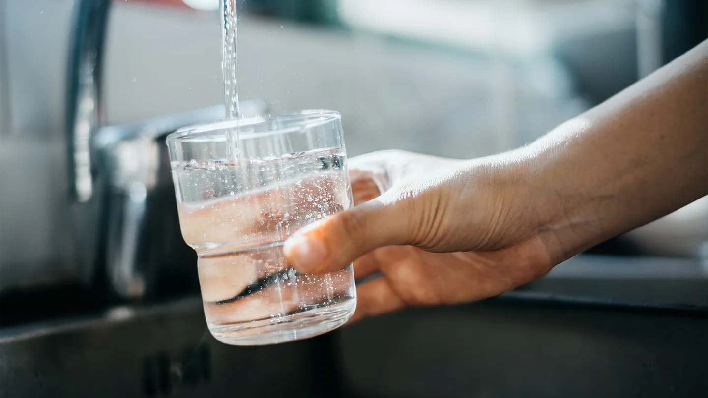

Start off by gathering all of your supplies that you need.
For this part you are going to be grabbing your x-acto knife (be sure to use the knife VERY carefully) and cutting off the bottom part of the water bottle because in the large part of the water bottle you will be placing in everything. (REMEMBER to keep the bottom part of the bottle and to not throw it away because you will be needing it later on)
Now you are going to carefully place the top part of the bottle into a glass cup. Make sure to keep the cap part in the bottle and the upper part outside.
Grab your cotton and place it very flatly in the bottle. Make sure to have a lot of it because you don't want the sand, charcoal or etc. to go through the cotton and into the bottle.
Get a medium sized bowl and fill it up with sand just below the middle part of the bowl. Now you want to pour the sand in the bottle right on top of the cotton. Spread out the sand evenly on top of the cotton.
Get your charcoal and crush it with a hammer if it already isn't crushed because you don't want to have big blobs of it in the bottle, that might just block the water from going through. Crush it up to the point where it's close to being a powder type of thing. After doing that, pour in the crushed charcoal and make sure to spread it evenly on top of the sand.
Grab your 3 things which are gravel, pebbles and rocks. Start of by putting in the gravel, then the rocks and lastly the pebbles and make sure they are again spread out evenly on top of everything that's in the bottle.
I hope you remembered to keep the bottom part of the bottle because you will be needing that for the dirty water. I made the water dirty by adding in some dirt/soil in it. Just get a little bit of water but not too much but also not too less.

Pour all of your water in the bottle and just wait and see if the water comes out clean or still dirty. For me, the water came out absolutely clean which means it was a success!
Now I will be explaining all of the science behind this experiment. The reason why I added pebbles, rocks and gravel is because they take out many big sediments (a solid material in the water such as rocks or wood chips). I added in sand because they take out all of the impurities from the water and make it less contaminated. Charcoal is said to also be taking out contamination and impurities from the water so it's kind of the same as sand. Cotton always filters/takes out dirty particles from the water and makes it very clean and drinkable. I hope you all enjoyed this little experiment that I did and were able to get a successful result out of it!
https://www.instructables.com/How-to-Make-a-Homemade-Water-Filter/